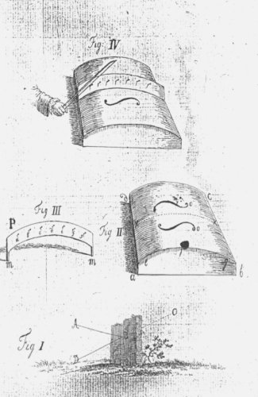

|  |
Vid.fig.II. Vid.fig.III. Vid.fig.IV.
|
22 DISSERTATIO PHILOSOPHICA intensitati soni clavorum, fungitur enim tunc rubigo munere resinae, & ad plures particulas motu tremulo afficiendas confert §. VII. n. 2 ex quo intensitas.
Instrumentum itaque non omnibus quidem musices hodiernae generibus aptum, voci tamen humanae perquam sociabile erit, si construatur anemotheca, seu cista a b c d, cujus extrinseca superficies e f g elliptice arcuata, & foraminibus o instructa sit, prout in chelybus majoribus, quas barbare Violones appellamus fieri solet. Sit que P: tabula lignea elliptice arcuata, cujus altitudo 4 circiter, crassities vero 1/2 pollicis est, clavis a b c d &c. instructa, ita ut quivis separatim plectro stringi possit clavus. Proin extremitatibus m m applicetur in x x figurae II, ita ut efficiat figuram IV. Concordatis ad libitum clavis, harmonia lente quidem producens, sed auribus admodum grata elici poterit; cujus experimentum magno cum successu, & admiratione institui.
Audio quam plurimos aetatis nostrae Orpheos una voce clamantes: ubi manebunt allegro, assai, presto, prestissimo &c. nostrae maxima ornamenta musices? haec in tuo Clavorum |